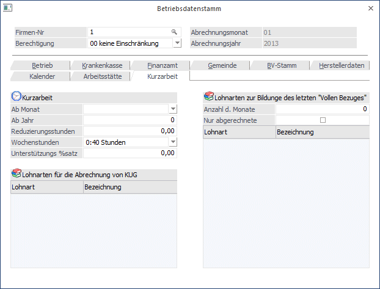

In diesem Register können, wenn die Lizenz für das Programm WinLine KUG vorhanden ist, Basiseinstellung für die Abrechnung von Kurzarbeit vorgenommen werden. Dazu stehen folgende Felder zur Verfügung:

Kurzarbeit
Ø Ab Monat
Aus der Auswahllistbox kann ausgewählt werden, ab wann die Kurzarbeit im Betrieb angewendet werden soll.
Ø Ab Jahr
Hier kann das Jahr eingetragen werden, ab dem die Kurzarbeit berechnet werden solle.
Ø Reduzierungsstunden
Eingabe der Stunden, um die die Arbeitszeit verkürzt wird.
Ø Wochenstunden
Aus der Auswahllistbox kann die Anzahl der Stunden ausgewählt werden, die vor Beginn der Kurzarbeit gearbeitet wurden. Dabei stehen die Optionen 40 Stunden, 38,5 Stunden, 38 Stunden und 36 Stunden zur Verfügung.
Ø Unterstützungs %satz
Hier wird der Prozentsatz eingetragen, der für die Ausfallszeit gezahlt wird. Bleibt der Prozentsatz auf 0, wird als Ausfall nur der Betrag gemäß AMS-Liste berechnet.
Ø Lohnarten für die Abrechnung von KUG
In dieser Tabelle können die Lohnarten eingetragen werden, die für die Abrechnung von Kurzarbeiten verwendet werden sollen. Im Normalfall können das folgende Lohnarten sein:
ü Lohnart "normale
Arbeitszeit"
Mit dieser Lohnart wird der "normale" Bezug abgerechnet. Hier
kann entweder die Standardlohnart verwendet werden, oder aber es wird eine
Lohnart verwendet, in der der Arbeitslohn über die Formel (Funktion
GetKUGBezug()) berechnet wird.
ü Lohnart
"Vergütungsentschädigung"
Mit dieser Lohnart wird der Bezug abgerechnet, der
auch vom AMS refundiert wird. Mit der Formel-Funktion GetKUGAusgleich() kann
dieser Betrag anhand der Parameter ermittelt werden.
ü Lohnart "Ausfalldifferenz"
Mit
dieser Lohnart wird die Differenz aus der "normalen Arbeitszeit", der
"Vergütungsentschädigung" und dem letzten Bezug gerechnet, wofür in der Formel
die Funktion GetKUGDifferenz() zur Verfügung steht. Von dieser
"Ausfalldifferenz" sind nur die SV-Abgaben (allerdings ohne Nebenbeträge wie KU,
WF etc.) abzuführen, wobei es Vereinbarungssache ist, ob diese Abgaben von AN/DG
gemeinsam oder nur vom DG getragen werden. Für diese Unterscheidung gibt es im
Lohnartenstamm auch zwei unterschiedliche Abrechnungsschemata.
Lohnarten zur Bildung des letzten "Vollen Bezugs"
In diesem Bereich können Einstellungen vorgenommen werden, damit das Programm den letzten vollen Bezug des jeweiligen AN ermitteln kann. Das ist die Basis für die weiterführenden Berechnungen für die Abrechnung der Kurzarbeit.
Ø Anzahl der Monate
In diesem Feld kann die Anzahl der Monate definiert werden, die für die Berechnung des letzten vollen Bezuges berücksichtigt werden sollen. Aus dieser Anzahl der Monate wird dann der Schnitt gerechnet.
Ø Nur abgerechnete
Wenn diese Option gesetzt ist, werden für die Findung des letzten Vollen Bezugs nur die Monate berücksichtigt, die auch tatsächlich abgerechnet wurden.
Ø Lohnartentabelle
In der Tabelle werden die Lohnarten eingetragen, die für die Berechnung des letzten Vollen Bezuges herangezogen werden sollen. Darin enthalten sollen alle Lohnarten sein, die der AN regelmäßig erhalten hat.
Durch Drücken der F5-Taste werden die Änderungen gespeichert, und es kann der nächste Betriebsstamm bearbeitet werden. Durch Drücken der ESC-Taste wird das Fenster geschlossen.